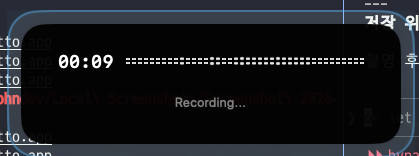
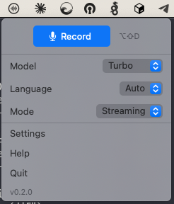
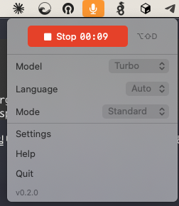
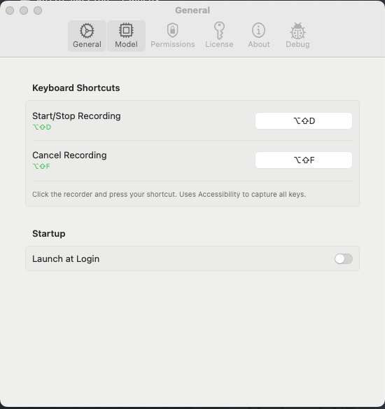

Dictto User Guide
What is Dictto?
Dictto is a macOS menu bar application for voice-to-text transcription. It uses WhisperKit to run OpenAI's Whisper speech recognition models directly on your Mac — completely offline, with no data sent to the cloud.
Key Features:
- 100% on-device processing — your voice never leaves your Mac
- Works offline — no internet required after model download
- Global keyboard shortcut — record from any app
- Auto-paste — transcribed text goes directly into your active text field
- Multiple languages — supports English, Korean, Japanese, Chinese, and more
- Real-time streaming — see transcription as you speak
Note: This guide shows default keyboard shortcuts. You can customize all shortcuts in Settings → General.
Quick Start
1. Grant Permissions
On first launch, Dictto needs two permissions:
| Permission |
Required? |
Purpose |
| Microphone |
Yes |
Record your voice |
| Accessibility |
Optional |
Auto-paste into text fields |
How to grant:
- Microphone: Click "OK" when macOS prompts, or go to System Settings → Privacy & Security → Microphone → Enable Dictto
- Accessibility: System Settings → Privacy & Security → Accessibility → Add Dictto (click + button)

Settings → Permissions tab
2. Your First Recording
- Click the Dictto icon in your menu bar (microphone icon, top-right near the clock)
- Click Record (or press your shortcut, default: ⇧⌥D)
- Speak clearly into your microphone
- Click Stop (or press the same shortcut again)
- Wait for transcription — text appears on your clipboard (and auto-pastes if Accessibility is enabled)
What you'll see:
- A small overlay appears on screen showing recording status and duration
- The menu bar icon changes to indicate recording state
- When transcription completes, you'll hear a sound notification

Recording overlay with timer and waveform
Menu Bar Interface
Click the Dictto icon in your menu bar to open the dropdown:

Menu bar dropdown (idle state)

Menu bar while recording
Record Button States
- Record — Ready to record
- Stop + timer — Currently recording (click to stop)
- Loading... — Model is loading
- Processing... — Transcription in progress
Quick Settings
These let you quickly change settings without opening the full Settings window:
- Model: Choose transcription model (Turbo recommended)
- Language: Set input language (Auto or specific language)
- Mode: Standard (record then transcribe) or Streaming (real-time)
Recording Modes
Standard Mode
Records complete audio first, then transcribes all at once.
Best for: Longer recordings, maximum accuracy, noisy environments
Streaming Mode
Transcribes in real-time as you speak — text appears immediately.
Best for: Quick notes, live dictation, immediate feedback
Tip: Standard mode is more accurate because it has full audio context. Use Streaming when speed matters more than perfect accuracy.
Model Selection
Different models offer trade-offs between speed and accuracy:
| Model |
Size |
Speed |
Accuracy |
| Tiny |
~75 MB |
Fastest |
Basic |
| Base |
~150 MB |
Fast |
Good |
| Small |
~500 MB |
Medium |
Better |
| Turbo |
~954 MB |
Fast |
Excellent |
| Large v3 |
~950 MB |
Slower |
Best |
Recommendation: Use Turbo (default) — best balance of speed and accuracy.
English-only users: Try Tiny.en, Base.en, or Small.en for faster results.
Keyboard Shortcuts
All shortcuts are customizable in Settings → General
Default Shortcuts
| Action |
Default |
Description |
| Start/Stop Recording |
⇧⌥D |
Toggle recording on/off |
| Cancel Recording |
Escape |
Stop without transcribing |
| Open Settings |
⌘, |
Open settings window |
| Quit |
⌘Q |
Exit Dictto |

Settings → General tab (customize shortcuts here)
Customizing Shortcuts
- Open Settings → General
- Click the shortcut recorder box
- Press your desired key combination
- New shortcut is saved automatically
Troubleshooting
Recording doesn't start
- Check microphone permission: System Settings → Privacy & Security → Microphone
- Make sure Dictto is enabled
- Restart Dictto
Shortcut doesn't work
- Check Accessibility permission: System Settings → Privacy & Security → Accessibility
- Make sure Dictto is in the list and enabled
- Try a different shortcut (might conflict with another app)
- Restart Dictto
Text doesn't auto-paste
- Grant Accessibility permission (required for auto-paste)
- Make sure a text field is focused when recording stops
- Use ⌘V to paste manually — text is always on clipboard
Transcription is inaccurate
- Use a larger model (Turbo or Large v3)
- Set language explicitly instead of Auto
- Speak clearly at normal pace
- Reduce background noise
- Use Standard mode instead of Streaming
Tips for Better Results
Speaking:
- Speak naturally at normal pace
- Pause between sentences for better punctuation
- Enunciate clearly for technical terms
Environment:
- Use in a quiet space
- Stay close to your microphone
- Use Standard mode for important transcriptions
Privacy & Data
- 100% local processing — Audio never leaves your Mac
- No cloud services — Works completely offline after model download
- No analytics — Dictto doesn't track or collect any data
- Temporary audio — Recordings are deleted after transcription
Dictto v0.2.0